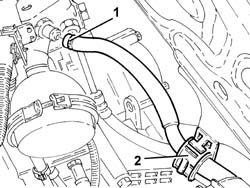
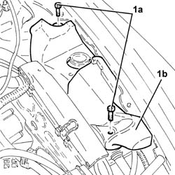
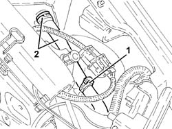
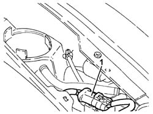
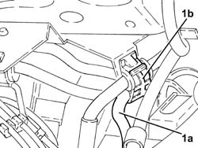
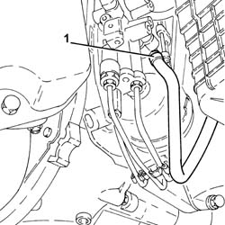

2127C22 pipe from hydraulic speed selection actuator unit to fluid reservoir - r r
- Path
- Procedures > 21 GEARBOX > 2127 ELECTRO-HYDRAULIC SELECTION. GEARBOX EXTERNAL. CONTROLS > 2127C hydraulic gear selection system > 2127C22 pipe from hydraulic speed selection actuator unit to fluid reservoir - r r
- Kind
- repair procedure (removal / refitting; the operation number is the code)
- Applies to
- engines: 2.0 TS, 3.2 V6; all production periods
- Interactive page
- https://sloeber94.github.io/elrnDB-a147/en/#/3025149
Applies to: engines: 2.0 TS; all production periods; only with equipment: Cambio robotizzato
 Removing
Removing
 Refitting
RefittingProceed with the removal 5530B10 battery - r+r .
Proceed with the removal 5530B52 Battery DRIP TRAY/SUPPORT - R.R. .
Undo the electro-hydraulic gear selection hydraulic circuit fluid reservoir cap and drain the reservoir using a suitable syringe.
1. Disconnect the pipe between the electro-hydraulic gear selection hydraulic unit and the fluid reservoir, hydraulic unit side.
2. Release the pipe between the electro-hydraulic selection hydraulic unit and the fluid reservoir from the fastening on the bodyshell side panel.

Applies to: engines: 2.0 TS; all production periods; only with equipment: Cambio robotizzato
1. Undo bolts (1a) and remove protection (1b).

Applies to: engines: 2.0 TS; all production periods; only with equipment: Cambio robotizzato
1. Release the pipe between the electro-hydraulic gear selection hydraulic unit and the fluid reservoir from the fastening on the support.
2. Disconnect the pipe between the electro-hydraulic gear selection hydraulic unit and the fluid reservoir, reservoir side, and remove it.

Applies to: engines: 2.0 TS; all production periods; only with equipment: Cambio robotizzato
Refitting
RemovingPlace the pipe between the electro-hydraulic gear selection hydraulic unit and the fluid reservoir back in its housing and connect it to the reservoir.
Secure the pipe from the electro-hydraulic gear selection hydraulic unit to the fluid reservoir to the fastening on the support.
Place the protection back in its housing and secure it using the bolt.
Secure the pipe from the electro-hydraulic selection hydraulic unit to the fluid reservoir to the fastening on the bodyshell side panel.
Connect the pipe between the electro-hydraulic gear selection hydraulic unit and the fluid reservoir, hydraulic unit side.
Check the level of the fluid in the electro-hydraulic gear selection hydraulic system and top it up, if necessary 2127C04 ELECTROHYDRAULIC selection gearbox hydraulic system FLUID - Check level and top up if necessary. .
Bleed the air from the electro-hydraulic gear selection hydraulic system 2127C06 Electro-hydraulic selection manual gearbox HYDRAULIC SYSTEM - Bleeding air .
Proceed with the refitting 5530B52 Battery DRIP TRAY/SUPPORT - R.R. .
Proceed with the refitting 5530B10 battery - r+r .
Remove the car from the ramp.
Applies to: engines: 3.2 V6; all production periods; only with equipment: Cambio robotizzato
Removing
RefittingPosition the vehicle on the ramp
Connect the Examiner diagnostic equipment.
Keep the brake pedal depressed.
Select 'Alfa 147 speed' on the Examiner.
Select 'Control Unit Test' on the Examiner and select the 'Marelli Selespeed Automatic Transmission'.
Press 'Active Diagnosis' on the Examiner and select 'Accumulator depressurizing'.
Continue with the procedure on the Examiner.
Proceed with removal 2127C12 hydraulic gear selection fluid reservoir - r r .
Proceed with removal 5530B10 battery - r+r .
Proceed with removal 5530B52 Battery DRIP TRAY/SUPPORT - R.R. .
1. Release the electrical connection for the electro-hydraulic selection system electric pump from the support.

Applies to: engines: 3.2 V6; all production periods; only with equipment: Cambio robotizzato
1. Release the pipe between the electro-hydraulic selection hydraulic actuator unit and the fluid reservoir (1a) from the band (1b).

Applies to: engines: 3.2 V6; all production periods; only with equipment: Cambio robotizzato
Proceed with removal 7055B54 under-engine guard - r r .
1. Loosen the band and disconnect the pipe between the electro-hydraulic gear selection hydraulic unit and the fluid reservoir, hydraulic unit side, and remove it.

Applies to: engines: 3.2 V6; all production periods; only with equipment: Cambio robotizzato
Refitting
RemovingPlace the pipe between the electro-hydraulic gear selection hydraulic unit and the fluid reservoir back in its housing, connect it to the hydraulic unit and tighten the band.
Fasten the pipe from the electro-hydraulic gear selection hydraulic unit to the fluid reseroivr using the band.
Fix the electrical connection for the electro-hydraulic selection system electric pump to the support.
.Proceed with refitting 2127C12 hydraulic gear selection fluid reservoir - r r .
.Proceed with refitting 0010T47 hydraulic system fluid for gearbox with hydraulic selection check level and top up if necessary .
.Proceed with refitting 0010T48 hydraulic system for gearbox with hydraulic selection bleed air .
.Proceed with refitting 5530B52 Battery DRIP TRAY/SUPPORT - R.R. .
.Proceed with refitting 5530B10 battery - r+r .
.Proceed with refitting 7055B54 under-engine guard - r r .
Remove the car from the ramps.
Topics linked from this page (8)
- 0010T47 hydraulic system fluid for gearbox with hydraulic selection check level and top up if necessary
- 0010T48 hydraulic system for gearbox with hydraulic selection bleed air
- 2127C04 ELECTROHYDRAULIC selection gearbox hydraulic system FLUID - Check level and top up if necessary.
- 2127C06 Electro-hydraulic selection manual gearbox HYDRAULIC SYSTEM - Bleeding air
- 2127C12 hydraulic gear selection fluid reservoir - r r
- 5530B10 battery - r+r
- 5530B52 Battery DRIP TRAY/SUPPORT - R.R.
- 7055B54 under-engine guard - r r